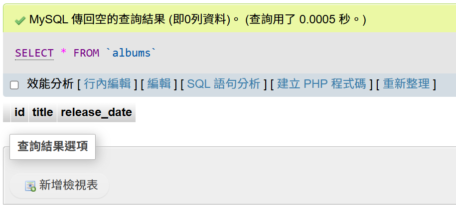
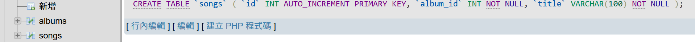

SQL 基本語法操作
CREATE TABLE 建立資料表
今日練習先建兩張表：專輯（albums）、曲目（songs）；主鍵、欄位型別與是否必填依需求設定。
1
2
3
4
5
6
7
8
9
10
11
12
13
-- 建立專輯表
CREATE TABLE `albums` (
`id` INT AUTO_INCREMENT PRIMARY KEY,
`title` VARCHAR(50) NOT NULL,
`release_date` DATE
);
-- 建立歌曲表
CREATE TABLE `songs` (
`id` INT AUTO_INCREMENT PRIMARY KEY,
`album_id` INT NOT NULL,
`title` VARCHAR(100) NOT NULL
);
【執行結果】



INSERT 新增／插入
向資料表新增一列（或多列）資料；欄位與值須對應，字串用單引號。以下為今日練習：在已建好的 albums、songs
上匯入測試資料。
1
2
3
4
5
6
7
8
9
10
11
12
13
14
15
16
17
18
19
20
21
-- 匯入專輯資料
INSERT INTO `albums` (`id`, `title`, `release_date`) VALUES
(1, '學園別曲', '1997-05-14'),
(2, 'Welcome To The Sechskies Land', '1997-11-01'),
(3, 'Road Fighter', '1998-07-15');
-- 匯入第一張專輯曲目
INSERT INTO `songs` (`album_id`, `title`)
VALUES
(1, '學園別曲'),
(1, '戀情'),
(1, '男兒之路（品生品死）'),
(1, '確認'),
(1, '背叛感'),
(1, '請記得好嗎'),
(1, 'Walking In The Rain'),
(1, 'Dream Comes True'),
(1, '愛的宣言'),
(1, '一起來吧'),
(1, '戀情（Remix）'),
(1, '男兒之路（品生品死）（Remix）');
【執行結果】

SELECT 查詢
從一張或多張表取出欄位；可用 AS 為結果欄位取別名（例如 `score` AS '成績'）。
1
【執行結果】

UPDATE 更新
依條件修改既有列；務必寫 WHERE，避免整表被改寫。
1
【執行結果】

DELETE 刪除
依條件刪除列；同樣務必搭配 WHERE。
1
【執行結果】

SQL 條件句操作
WHERE 條件
篩選符合條件的列；可用 AND、OR 組合多條件。
1
【執行結果】

IN 特殊指定
欄位值落在所列清單之一即符合。
1
【執行結果】

BETWEEN 兩者之間
範圍寫法須小值在前、大值在後。
1
【執行結果】

LIKE 模糊查詢
以 % 表示任意長度字元；可組合出「開頭、包含、結尾、前後固定」等樣式。
1
【執行結果】

SQL 限制句操作
ORDER BY 排序
ASC 遞增（可省略）；DESC 遞減。多欄時先依第一欄排，同值再依後續欄位。
1
【執行結果】

GROUP BY 群組
依欄位分群；多欄時為第一層分群後再在群內做第二層分群（原文以縣市、地區為例）。
1
【執行結果】

LIMIT 限制筆數
LIMIT n 取前 n 筆；LIMIT offset, count 從第 offset 筆之後（以 0 起算）取
count 筆。
1
【執行結果】